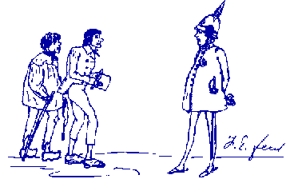

—— 1849 ——
Major Works
Wage Labour and Capital, Marx, Neue Rheinische Zeitung April 1849.
Two Political Trials
“And this life activity [the worker] sells to another person in order to secure the necessary means of life. ... He works that he may keep alive. He does not count the labor itself as a part of his life; it is rather a sacrifice of his life. It is a commodity that he has auctioned off to another.” [Marx, Wage Labour and Capital]

 |
Correspondence
Minor Works
Letter to the Frankfurter Journal (Marx)
The Revolutionary Uprising in the Palatinate and Baden (Engels)
The 13th of June (Marx)
Repudiation (Engels)
To the Editor of the Newspaper La Presse (Marx)
To The German Social Democrats and The Times (Engels)
Announcement of Neue Rheinische Zeitung Revue (Engels)